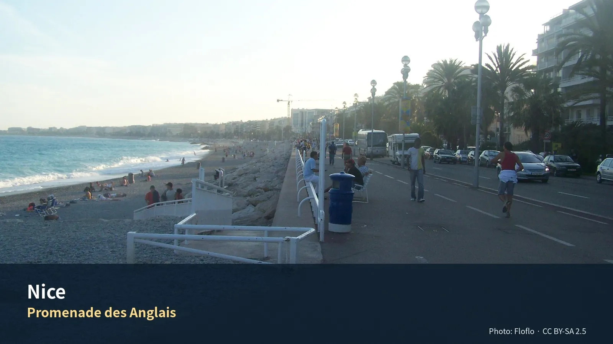

이미지를 불러오지 못했습니다.니스와 코트다쥐르 5박 6일
지중해 생활도시, 칸과 모나코, 시장과 해안풍경
기본안은 Nice 자체 탐방 + Cannes + Monaco + Nice 생활·회복일이다. 추가된 9월 8일은 Libération 시장, 화요일에 여는 Musée de la Photographie Charles Nègre 선택, 세탁·휴식·해변산책을 조합하는 완충일로 사용한다. Matisse·Chagall은 모두 화요일 휴관이므로 이날 배치하지 않는다. Saint-Paul-de-Vence·Grasse·Aix 이동은 9월 9일로 하루 늦춘다.
식사 원칙: 아침은 숙소, 점심은 샌드위치·시장·가벼운 현지식, 저녁은 레스토랑을 기본으로 한다.
운동 원칙: Jason은 러닝 또는 짧은 gym, Julia의 수영은 선택 일정이며 숙소 선택조건이 아니다.
일자
일정 한눈에이 구간을 어떻게 굴리는가Day 7 · 9월 4일 금Day 8 · 9월 5일 토Day 9 · 9월 6일 일Day 10 · 9월 7일 월Day 11 · 9월 8일 화Day 12 · 9월 9일 수